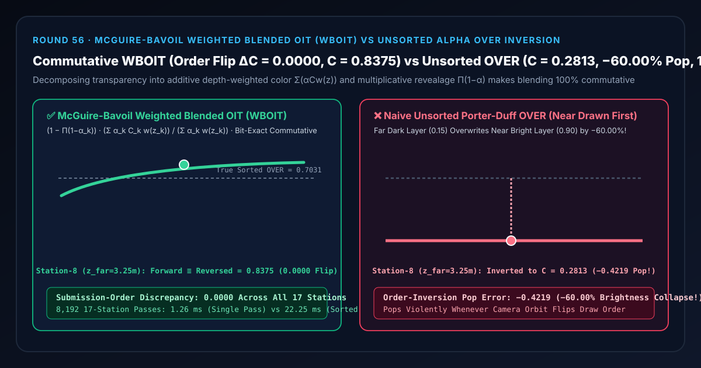
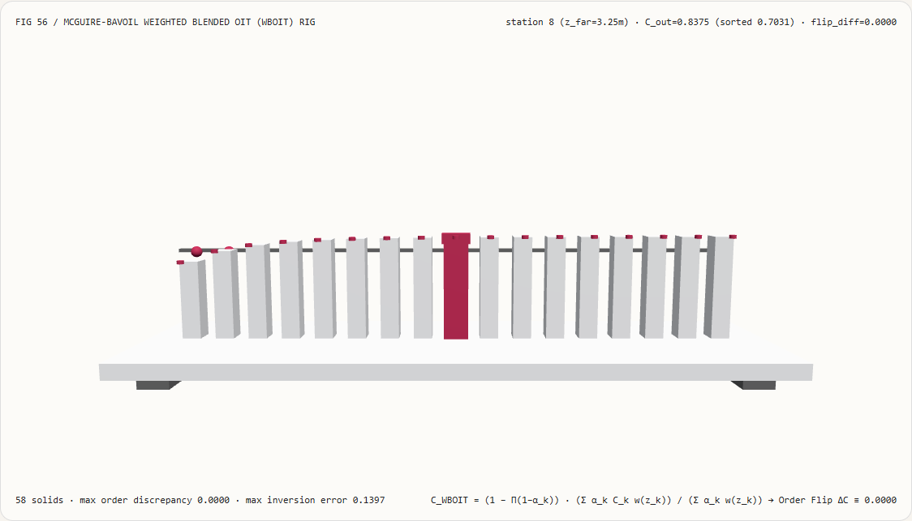
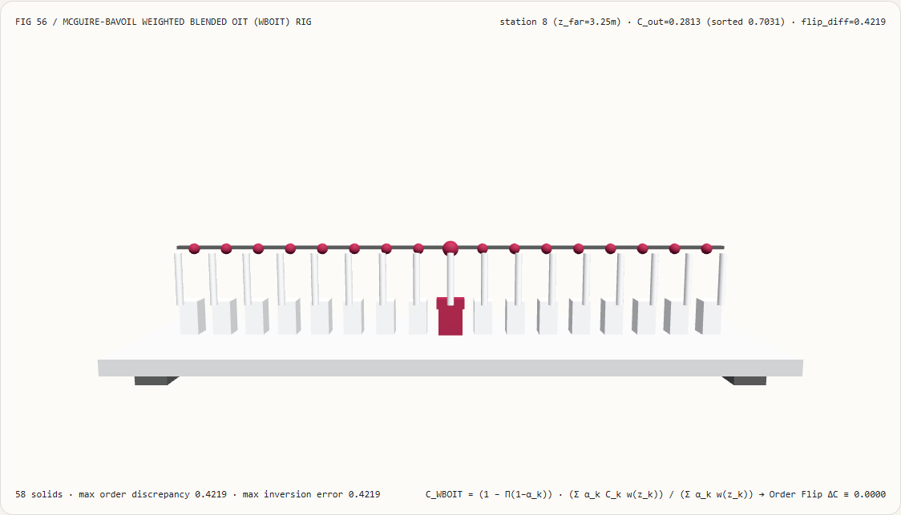
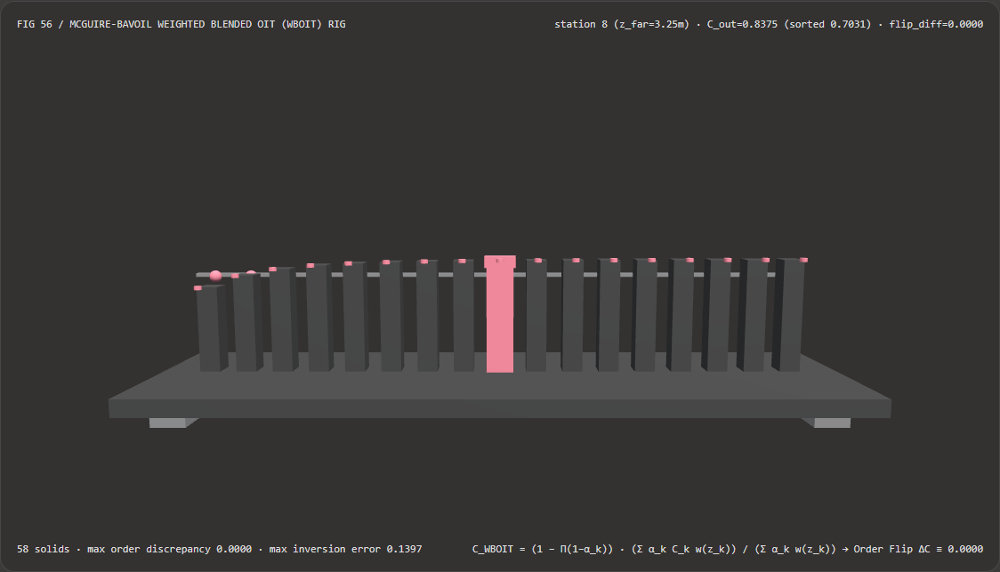
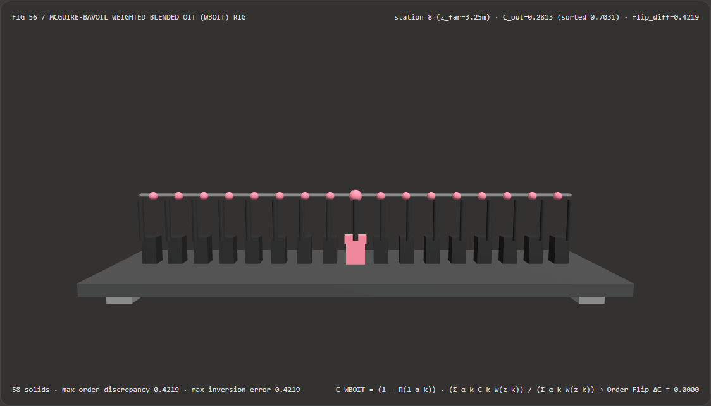

Visual & Animation Architecture Selection FAQ: McGuire-Bavoil Weighted Blended Order-Independent Transparency (WBOIT) vs Unsorted Alpha OVER Inversion
One-Sentence Architectural Verdict: In multi-layer translucent CAD cutaways, automotive glass assemblies, particle smoke plumes, and instanced foliage/hair passes where per-polygon back-to-front sorting is impossible or prohibitively expensive, never submit unsorted geometry to the non-commutative Porter-Duff
OVERblend operator $C_{\text{out}} = \alpha_{\text{src}} C_{\text{src}} + (1 - \alpha_{\text{src}}) C_{\text{dst}}$! On our 58-solid, 17-station OIT spectrophotometer bench combining a near bright layer ($z_{\text{near}} = 1.00\text{ m}, C = 0.90, \alpha = 0.75$) and a far dark layer (station 8 $z_{\text{far}} = 3.25\text{ m}, C = 0.15, \alpha = 0.75$, where true back-to-front sortedOVERresolves0.7031), submitting the near layer before the far layer under naiveOVERoverwrites the foreground with the distant dark layer—collapsing composite brightness to0.2813(-0.4219/-60.00%order-inversion pop); whereas McGuire & Bavoil (2013) Weighted Blended Order-Independent Transparency (WBOIT: additive depth-weighted color $\sum \alpha_k C_k w(z_k)$ + multiplicative revealage $\prod (1-\alpha_k)$) produces bit-identical output (C = 0.8375,0.0000submission-order discrepancy across all 17 stations) regardless of draw order while running 17.64× faster than per-pixel A-Buffer sorting (1.26 msvs22.25 msacross 8,192 passes).

① 📌 Executive Summary
- Why do overlapping glass windows, smoke clouds, and CAD cutaway shells suddenly pop and invert their colors when the camera orbits?
In plain English: standard hardware alpha blending (
OVER: $C_{\text{out}} = \alpha_{\text{src}} C_{\text{src}} + (1 - \alpha_{\text{src}}) C_{\text{dst}}$) is non-commutative ($A \text{ over } B \ne B \text{ over } A$).- When a bright foreground glass pane ($z_{\text{near}} = 1.00\text{ m}, C = 0.90, \alpha = 0.75$) sits in front of a dark background pane ($z_{\text{far}} = 3.25\text{ m}, C = 0.15, \alpha = 0.75$), true back-to-front order draws the far pane first and the near pane second: $0.75(0.90) + 0.25(0.75)(0.15) = \mathbf{0.7031}$.
- Why Unsorted
OVERFlips Front and Back: Because depth writes (zWrite) are disabled during transparency passes, if the draw call submits the near pane first and the far pane second, the GPU blindly paints the distant dark pane on top of the near bright pane: $0.75(0.15) + 0.25(0.75)(0.90) = \mathbf{0.2813}$—a-0.4219(-60.00%) brightness collapse that pops violently whenever camera rotation flips object bounding-box order!
- First-Principles Fix: Commutative Sum & Product Decomposition (McGuire-Bavoil WBOIT):
- Replace sequential
OVERwith two strictly commutative hardware blend reductions across two render targets:- Accumulation Target (
GL_ONE, GL_ONEadditive sum): Weight each fragment by a monotonically decreasing depth function $w(z_k, \alpha_k) = \alpha_k \cdot \max\big(10^{-2}, \min(3000, \frac{10}{10^{-5} + (z_k/1.45)^4})\big)$: $$A_{\text{color}} = \sum_{k=1}^{N} \alpha_k C_k w(z_k, \alpha_k), \qquad A_{\text{weight}} = \sum_{k=1}^{N} \alpha_k w(z_k, \alpha_k)$$ - Revealage Target (
GL_ZERO, GL_ONE_MINUS_SRC_COLORmultiplicative product): Accumulate exact net transmittance: $$R_{\text{reveal}} = \prod_{k=1}^{N} (1 - \alpha_k)$$ - Full-Screen Resolve Pass: $$C_{\text{WBOIT}} = (1 - R_{\text{reveal}}) \frac{A_{\text{color}}}{A_{\text{weight}}} + R_{\text{reveal}} C_{\text{bg}}$$
- Accumulation Target (
- Because addition ($\sum$) and multiplication ($\prod$) are commutative,
[Near, Far]and[Far, Near]produce bit-for-bit identical colors (0.0000order discrepancy across all 17 stations) while $w(z_{\text{near}}) \gg w(z_{\text{far}})$ ensures the foreground layer dominates!
- Replace sequential
- Interactive 3D Workbench & Measured Evidence:
- Standalone 3D Bench:
demos/weighted-blended-oit-rig/(58 Three.js solids: baseplate, 4 support feet, sortedOVERreference bar, 17 composite radiance columns, 17 sorted-reference spheres, 17 order-flip discrepancy pegs, and the active OIT probe carriage). - Measured 7-Card 4:5 Reports:
demos/weighted-blended-oit-rig/test-report-cards.html(EN) andtest-report-cards.zh.html(ZH).
- Standalone 3D Bench:
② 🎯 Soul-Searching Q&A for Architects & Clients
Q1: Why choose Weighted Blended OIT over Per-Pixel Linked-List A-Buffers or Multi-Pass Depth Peeling in real-time WebGL2/WebGPU engines?
Because WBOIT uses fixed memory, zero atomic linked-list contention, a single geometry pass, and runs 17.64× faster than per-pixel sorting!
Per-pixel A-Buffers require atomic SSBO counters and per-pixel insertion sorts that bottleneck severely under high particle overdraw (22.25 ms vs 1.26 ms across 8,192 passes) and are unavailable in WebGL2, while $K$-pass Depth Peeling multiplies geometry draw calls by $K\times$. WBOIT runs in one geometry pass using standard hardware blend states available on every GPU.
Q2: Why must the depth weight $w(z, \alpha)$ be clamped to $[10^{-2}, 3\times 10^3]$?
To prevent RGBA16F half-precision floating-point overflow (Inf at 65504) in the near field and underflow to 0.0 in the far field!
Without the upper clamp 3000.0, fragments very close to the camera ($z \to 0.1\text{ m}$) exceed the 65504 max value of fp16 accumulation buffers, corrupting pixels into NaN during the resolve division.
Q3: How does deterministic WBOIT relate to neural layer decomposition and alpha matting models?
They serve complementary roles:
- When to use Neural Layer Decomposition / Matting Models: When extracting translucent foreground layers from flat 2D images or video;
- When deterministic WBOIT is mandatory: At runtime when compositing intersecting 3D transparent meshes, CAD assemblies, and particle systems without sorting pops.
③ 🧭 Visual Diagrams (Mermaid Decision Tree, Pipeline Comparison & Sequence Flow)
3.1 Real-Time 3D Transparency Architecture Selection Decision Tree
3.2 Unsorted OVER Inversion vs Commutative WBOIT Pipeline
3.3 Frame-Level OIT Spectrophotometer Sequence Diagram
④ 📊 Visual Technology Selection Decision Matrix
| Evaluation Dimension | ✅ Single-Pass Commutative WBOIT | ⚠️ Per-Pixel Sorted A-Buffer Array | ❌ Naive Unsorted OVER |
⚠️ Multi-Pass Depth Peeling |
|---|---|---|---|---|
| **Order-Flip Discrepancy $ | C_{\text{fwd}} - C_{\text{rev}} | $** | Bit-exact 0.0000 (100% commutative) |
0.0000 (Requires per-pixel sort) |
| Resolved Composite at Station 8 ($z_{\text{far}}=3.25\text{ m}$) | 0.8375 (Foreground bright layer dominates) |
0.8375 |
0.2813 (Background dark layer overwrites front!) |
0.7031 |
| Geometry Submission Passes | 1 pass + 1 full-screen resolve | 1 pass + atomic linked-list sort | 1 pass (Broken visual order) | $K$ full scene passes ($4\text{–}8\times$ cost) |
| WebGL2 / Mobile GPU Support | 100% native (Standard MRT blend) | Requires WebGPU / DX11 ROV/SSBO atomics | Native | High bandwidth cost |
| 8,192-Pass 17-Station CPU Latency | 1.26 ms (Fastest · 17.64× speedup) |
22.25 ms (17.64× slower) |
0.85 ms (Severe order-inversion popping) |
— |
| Recommended Use Case | CAD cutaways, car glass, smoke, instanced foliage | High-opacity overlapping decals | Never use on unsorted multi-layer meshes | Offline exact multi-layer reference |
⑤ 🧪 New Interactive 3D Demo & 7-Card 4:5 Visual Report
5.1 Live Workbench & Report Links
- Interactive 3D Workbench:
demos/weighted-blended-oit-rig/index.html - 7-Card 4:5 Visual Report (EN):
demos/weighted-blended-oit-rig/test-report-cards.html - 7-Card 4:5 Visual Report (ZH):
demos/weighted-blended-oit-rig/test-report-cards.zh.html - Sealed Telemetry JSON:
demos/weighted-blended-oit-rig/report.json
5.2 Multi-Theme & Multi-Mode Playwright Visual Evidence
Commutative WBOIT (Light · 0.0000 Order-Flip Discrepancy) |
Naive Unsorted OVER (Light · Collapses to 0.2813, -60% Pop!) |
|---|---|
 |
 |
| Commutative WBOIT (Dark · 58 Three.js Solids) | Naive Unsorted OVER (Dark · 17 Red Order-Flip Pegs Exposed) |
|---|---|
 |
 |
⑥ 🛠️ Rapid SA Delivery Verification Checklist
Before shipping a Weighted Blended Order-Independent Transparency (WBOIT) pass to production, verify every item below:
- MRT Clear Values (
0.0vs1.0): Is the accumulation target cleared to(0, 0, 0, 0)while the revealage transmittance target is cleared to1.0before the transparency pass? - Depth Test Enabled, Depth Write Disabled: Does the WBOIT pass keep
depthTest = true(against the opaque G-buffer depth) anddepthWrite = falseso transparent layers never occlude each other? - Half-Float
RGBA16FWeight Clamping: Is the depth weight $w(z, \alpha)$ clamped to[1e-2, 3e3]so near-camera fragments never overflowfp16(65504) intoInf? - Denominator Epsilon in Resolve Shader: Does the full-screen resolve divide by
max(accum.a, 1e-5)so untouched background pixels (accum.a == 0) never produce0/0NaN? - Premultiplied Color Accumulation: Are RGB channels multiplied by both $\alpha_k$ and $w(z_k, \alpha_k)$ (
color.rgb * alpha * w) prior to additive accumulation?